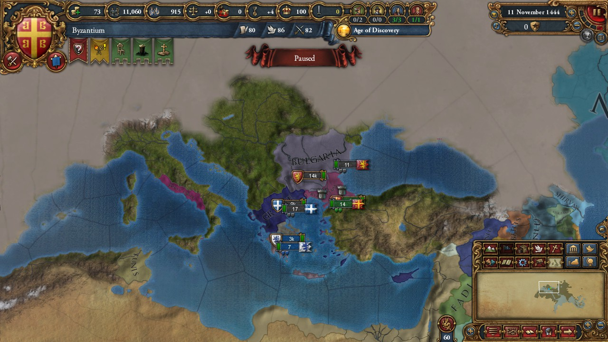
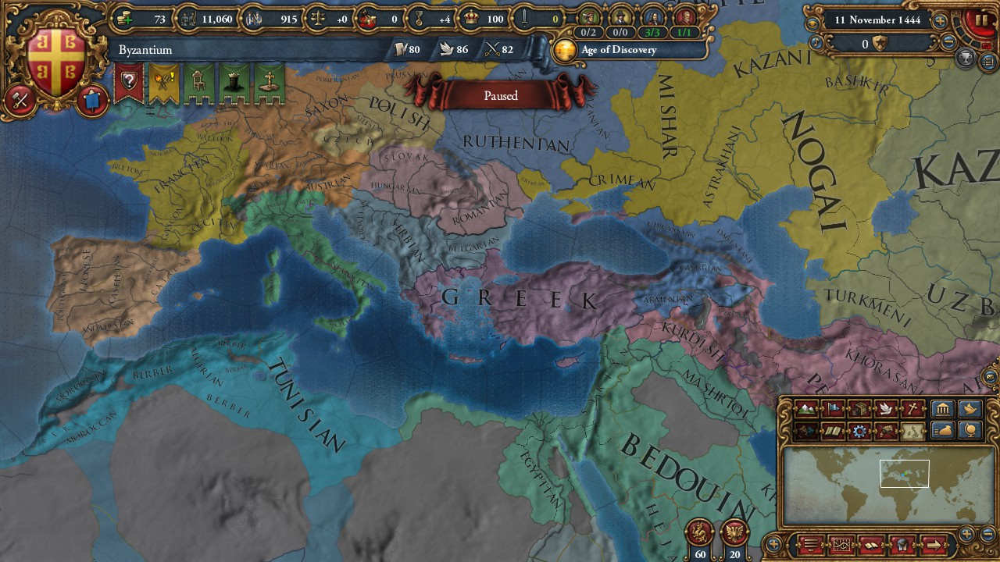
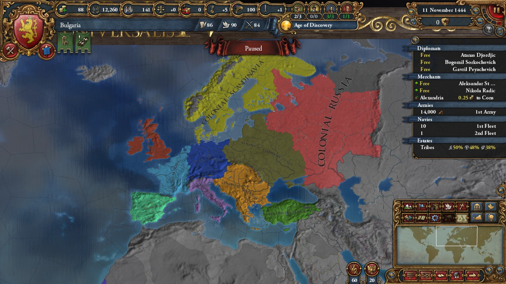
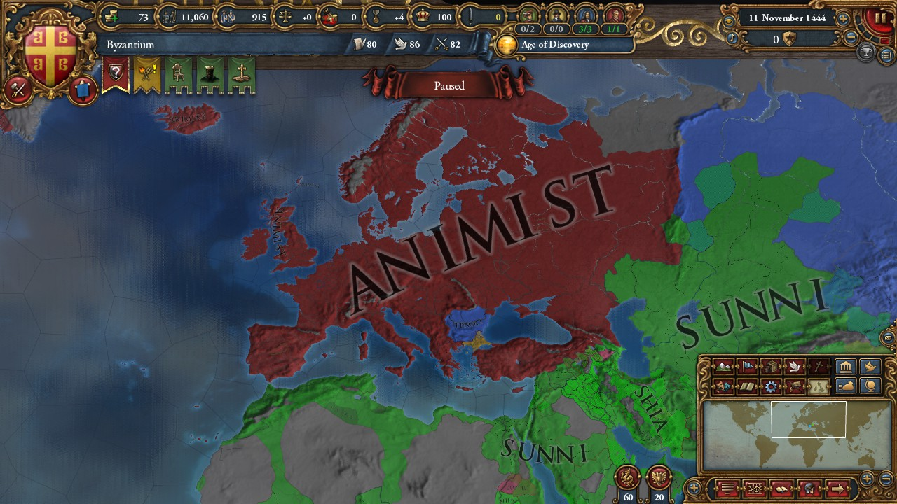

Hello fellow Europa players. It's been some time since the last dev diary. While I'd like to be able to do these more regularly, I've also got other things I need to address week to week, and it seems a bi-weekly update may just be better for future refrence.
In addition to that, this week will not mark the release of version 0.4. I had hoped to complete version 0.4 by last week, so I imagine this comes as a huge disapoint for everyone. A lot of progress has been made toward Goal 4, but there are still some changes that need to be made to complete it. I'll discuss why this is taking so long in a little bit...
Now for some good news, I've made progress toward Goal 5, and I have been toying with skipping the 0.4 pre-beta release and going straight into the 0.5 pre-beta release, Old World. As we'll see, the Old world currently exists in a somewhat lack luster state. The idea would be to release a number of 0.5 updates to flesh out the old world, focusing on making each region somewhat interesting. I've still got to flesh out the specifics, but right expect to see 0.5 without the 0.4 release.
Anyway, let's see whats going on in the old world, shall we?
Much of the lore/reasoning behind Europe's isolation is still a mystery. What we do know is that for some time, governing the Continent beyond the Mediterranean has been a nightmare for those who dared enter it.
In Greece, the various city states were recently united under the nation of Macedon, who established the only known great civilization in the region. But the greek central government has never held much power over the rest of the region, and with the rise of a new faith in Byzantium, A civil war over religion has shattered the nation into many smaller parts. Worse still, the Bulgars to the North threaten the whole of greece, and it seems they will likely annex the region unless if unifies quickly.
Anatolia itself is somewhat barren. Future development will occur here, but for now its only important to know that it lacks Kebabs.
Beyond Greece, minor nations also will exist in Italy/Carthage but for now, only a 3 province Rome, and a four province Tunis hold land there.
The last thing I want to show off before I sign off is this picture showing how colonial nations will appear in Europe. The Colonial Nations will include Pretani, Gaul, Lusitania, Italy, Germania, Balkans, Anatolia, Eastern Plain, Russia, and Scandanavia. Those are not their final names, but I still have somework to do there. For instance, I'd like the Eastern Plain & Russianborders to change slightly, but I'm not certain how just yet. In addition, I'm thinking of another region in Northern Africa, called colonial Carthage.
So why are all these changes taking so long? Well, when I initially started this project, I realized changing the province details of all of Europe would take FOREVER. For example, look at this picture of Europe being Animist:
This process took me less than a minute using a tool that I've developed for changing the values of a region of provinces all at once. I Call it the Console Province Editor, and while I've been working on this, I've also been developing this project to help modders make their own mods. I incourage anyone to check it out.
However, I've taken on a lot of technical debt on that project, and its time to rewrite that code a little nicer, and add a little more functionality. Right now, it is a working project, but it still has a long way to go to be useful. Therefore, progress on the America Universalis Project is going to be put on a short hiatus to get that done. Sorry to anyone reading, it just really would help more to finish this tool.
Note, you'll see I've made changes to the overall timeline. As I've worked on this project, I've made changes to what each sprint to make them more in line with what I want to see happen, and what I think I can accomplish.
This release was completed June 3rd. Removes the reformable portion of the native faiths. This will allow them to accept institutions.
This release was completed June 10th. Reroutes trade nodes to flow ultimately to American nodes.
Reworks american technology groups, to make them similar to european groups.
Reworks European technology groups to make them silimar to where American groups were.
Drastically reduces the size of European nations, lower devlopment significately, making it an easy target for annexation. Several Tags will be removed or kept as placeholders until their replacement can be arranged.
Change how institutions spawn to decentralize their development, and ensure that America has a slight edge in developing them. This will also allow different parts of the world to develop institutions somewhat separately.
Changes ages and their goals to more closely align with the American focus. Nations that gain a special boost will drastically change.
Drastically increase the amount of development in America. Increase the size of many nations, and add several new tags.
This release will constitute the minimal goal for this project. At this point, I do not promise any further development, but I do plan to maintain the project through each update.
Remove many of the European based events. This may speed the game up, and should fix issues from removing a large portion of Europe.
Consolidates Abrahamic religions and lowers their influence drastically. Adds new Polystheistic religions to Europe. They may have a reform mechanic, I haven't decided.
Once Dharma releases, I plan to add unique government reforms for the Americas and Europe.
Adds many American Based Events and lore for users to enjoy.
From here on, I've not decided a path for this project. Most Likely, Ill work on each continent individually, and polish the mod until I consider it fully stand alone, then make the 1.0 release.